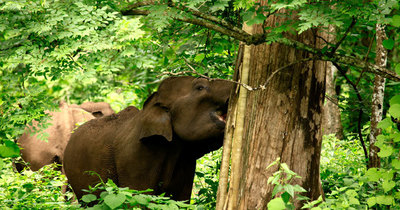

Banasura Sagar Dam, Chembra Peak, Kuruva Island, Edakkal Caves, Chain Tree, Pookode Lake, Tholpetty Wildlife Sanctuary, The Bamboo Factory, Wayanad Wildlife Sanctuary, Soochipara Falls, Phantom Rock, Neelimala View Point and many more.
While a lot of you are searching for places to visit in Wayanad, let’s make this easier for you with our amazing list. Loaded with charming waterfalls, caves, resorts, and homestays, this prominent town is renowned for its zest ranches and natural life. Among the prettiest territories of Kerala, Wayanad has a large number of alternatives for its guests.,br>
Wayanad is situated on the fringe of Tamil Nadu and Kerala. The whole area is totally green with sloping reaches and natural life incorporating Tholpetty in the North, Muthanga in the east circumscribing with Tamil Nadu, Kalpetta in the south, Mananthvadi in the north-west and Sultan Bathery (Sultan Battery) in the east.
In the east one can find the Wayanad Wildlife Sanctuary which is a rich, forested locale with regions of high elevation, home to creatures including Asiatic elephants, tigers, panthers, and egrets. In the Ambukuthi Hills toward the south, one can find beautiful Wayanad attractions like Edakkal Caves which contain antiquated petroglyphs, some going back to the Neolithic age.
Top places to visit are:
Banasura Sagar Dam

-
Chembra Peak

-
Kuruva Island

-
Muthanga Wildlife Santuary
